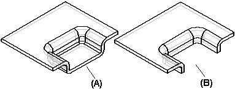

Constructing dimples
Constructing a dimple is just like constructing a drawn cutout. The principal difference between the two features is that a dimple has a "bottom" (A), and a drawn cutout (B) does not.

Constructing a dimple is just like constructing a drawn cutout. The principal difference between the two features is that a dimple has a "bottom" (A), and a drawn cutout (B) does not.
